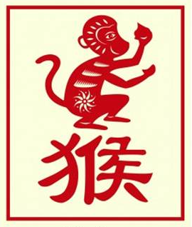

The Chinese Zodiac: Monkey

- Fixed Season: Autumn
- Fixed Direction: West-Southwest
- Fixed Element: Metal/Yang
- Associated Sun Sign: Leo
Those born under the sign of the Monkey are likely to view life as a series of quick events. Moving from one experience to the other, then, is not so much about the things that they are doing as the feelings that such moves evoke. If something is exciting, then they are likely to act upon it and see what comes their way. Which can bring moments of great achievement as well as times of loss and learning. What the Monkey represents then is a younger way of life, in which action, loss, and education all have an important role to play.
As a person born under the sign of the Monkey continues to age, however, and transitions into the phases of adulthood, they must readdress the lifestyle and choices that have guided them thus far. While this can be difficult, the momentum does not have to cease, but can simply be redirected towards other forms of endeavors, such as hobbies or new careers. For in this manner the Monkey can continue to expand their experiences, but do not risk the well being of the people that have begun to form their inner circle, such as friends of old or a partner and family.